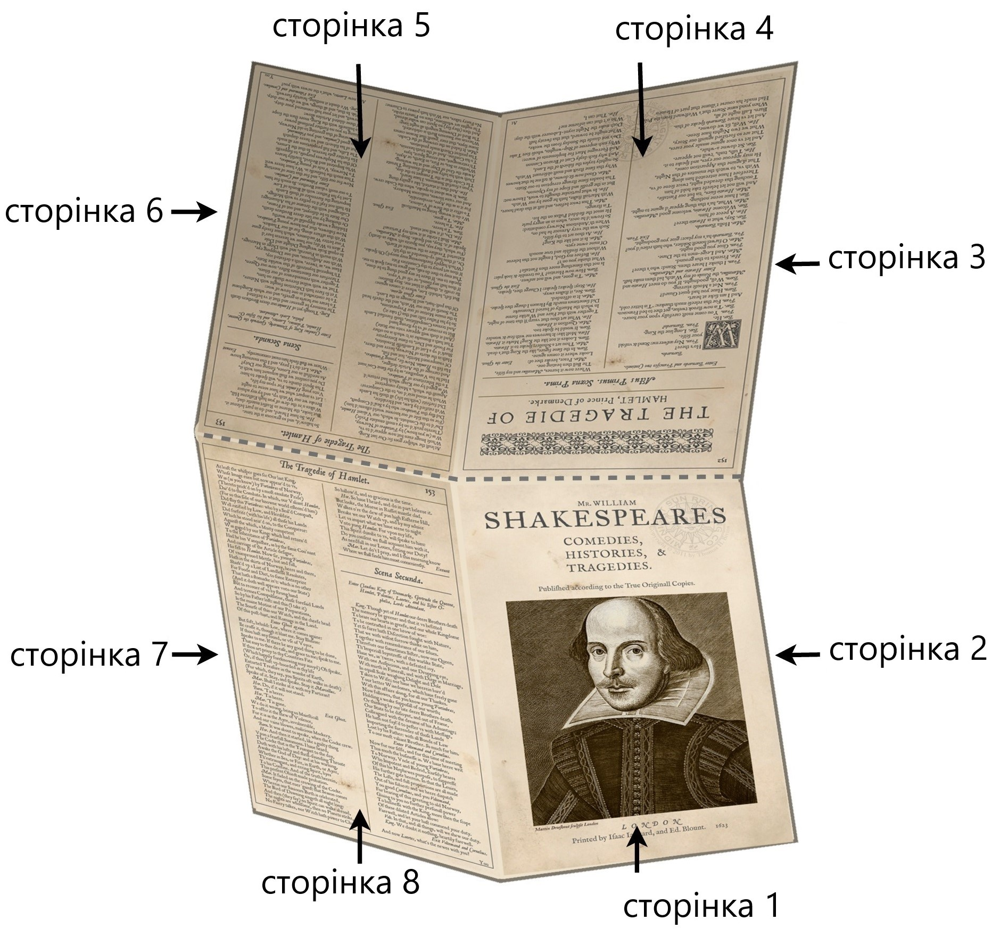
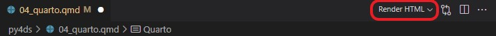

Quarto — це науково–технічна видавнича система з відкритим кодом, яка ґрунтується на універсальному конверторі документів Pandoc та використовує мову розмітки Markdown.
Це універсальний інструмент для тих, хто пише на R, Python, Julia та Observable JavaScript.
Назва
Розробники Quarto хотіли використати ім’я, яке мало деяке значення в історії видавничої справи.
Вибір пав на Quarto (від латинського quārtō, скорочено Qto, 4to або 4º) — це формат книги або брошури в одну четвертину топографічного листа.
На кожній стороні листа при цьому поміщається 4 сторінки книги (8 сторінок на один лист).

Можливості Quarto
Quarto являє собою текстовий документ спеціального формату .qmd, який можна скомпілювати у різноманітні документи:
Спочатку Knitr (для R) або Jupyter (для Python або Julia) виконує всі фрагменти коду .qmd-файлу і створює новий markdown (.md) документ, який включає в себе код і всі його результати.
Далі .md–файл оброблюється Pandoc для перетворення у різноманітні формати файлів (HTML, PDF, Word тощо).
Рендерінг
За допомогою кнопки Render в VS Code.

За допомогою командного рядка:
terminal
quarto render <input> --to <format># Наприклад:quarto render document.qmd --to docx
Структура документів Quatro
Quatro документи складаються з трьох базових складових:
YAML–шапки1
Тексту з використанням розмітки Markdown
Чанків (анг. chunks) з кодом
YAML–шапка
YAML–шапка знаходиться нагорі документу і відділена трьома дефісами (---) зверху та знизу.
В ній зберігається мета–інформація документу: назва, дата створення, автор, інформація щодо роботи коду, контенту і процесу рендерінгу.
Ця частина документу йде одразу після YAML–шапки і складає основну частину документу.
Markdown — це популярна і зручна мова розмітки.
Ви непевно зустрічали її в README.md–файлах репозиторіїв GitHub, а також у Telegram–повідомленнях.
*Зродились ми великої години* \**З пожеж війни і полум'я вогнів.**\***Плекав нас біль за долю України,***\`Зростив в нас гнів` і лють на ~~ворогів~~!
Зродились ми великої години З пожеж війни і полум’я вогнів. Плекав нас біль за долю України, Зростив в нас гнів і лють на ворогів!
$$ x = {-b \pm \sqrt{b^2-4ac} \over 2a} $$
\[ x = {-b \pm \sqrt{b^2-4ac} \over 2a} \]
Чанки з кодом
Chunks — це блоки, які відділяються від тексту потрійними зворотніми лапками ```( анг. backtick) на початку та в кінці. У фігурних дужках вказується мова програмування на якій необхідно виконати код.
```{python}print('Fly, you fools!')```
Fly, you fools!
Результат чанку за замовчування виводиться одразу після нього, але все це можна налаштувати.
import numpy as npimport pandas as pdimport matplotlib.pyplot as pltx = np.arange(-4, 4, .012)y = np.arange(-4, 4, .012)X, Y = np.meshgrid(x, y)Z =1- np.abs(X) - np.sin(Y**2)W =1+ Y - np.cos(X**2)fig = plt.figure(figsize=(4, 4))ax = fig.add_subplot(projection='polar')plt.scatter(Z, W, alpha=.03, s=0.2)plt.axis('off')plt.show()